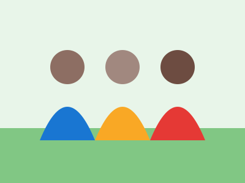
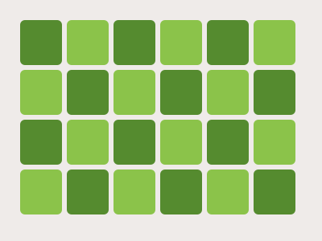

120
apprenants accueillis chaque année
Jardin pédagogique
Faites défiler la page : les chiffres et les cartes apparaissent au fur et à mesure.
Aujourd'hui : 28 °C, ciel dégagé le matin.
Risque d'averse en fin de journée : arrosez tôt, pas besoin le soir.
Cliquez sur un chiffre pour le faire « pulser ».

120
apprenants accueillis chaque année
35
variétés de légumes et d'herbes

2 400
m² de parcelles cultivées
18 000
litres d'eau de pluie récupérés
Bêcher, amender avec du compost et reconnaître un sol vivant.
Choisir la bonne profondeur, le bon écartement, la bonne saison.
Récupérer la pluie, pailler, arroser au pied et au bon moment.
Associer les cultures, observer les insectes et préparer des répulsifs naturels.
Cueillir à maturité, sécher, trier et stocker sans perdre la récolte.
Peser, présenter, fixer un prix juste et tenir un petit carnet de comptes.